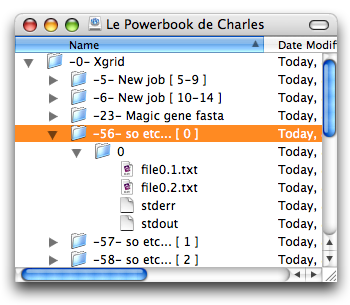

Xgrid Fuse
Created by Charles Parnot. Copyright Charles Parnot 2007. All rights reserved.
Contact by email: charles parnot gmail com (fill the blanks)
See also Xgrid FUSE web page.
Description
Xgrid FUSE version 0.3.0 (Universal binary)
- Requires Mac OS X 10.4.9
- Requires MacFUSE Core 0.3.0 (only tested with this version)
Xgrid FUSE transforms an Xgrid controller into a file system. Accessing your controller data is now just as easy as plugging an external hard drive. This means your job results will appear as actual files in the Finder or in the Terminal, and you can browse your jobs just like real folders and manipulate results just like real files (well, read-only files). All of this goodness thanks to the fantastic MacFUSE project!
If you were running version 0.2.0, it is strongly recommanded to update to version 0.3.0, as it fixes a number of (embarassing) bugs.
How to use
Installing MacFUSE
Before using Xgrid FUSE, you must install MacFUSE. This will install a kernel extension and will require a restart of your machine. The installation itself is very simple and straightforward, but you must be aware that MacFUSE works at a low level in the OS X system. Any bug in MacFUSE or, more likely, in the way Xgrid FUSE interacts with MacFUSE, and it could have serious consequences on the stability of your system. As far as I can tell, this version of Xgrid FUSE has not caused any problem. In addition, MacFUSE has been used in several other applications that have been used by a large number of people. But it is still at an early stage and should be considered experimental. Do not use on production systems (whatever that means), and use at your own risk.
Still motivated? Download the latest version from the MacFUSE web site, double-click the installation package and follow the instructions. Then read on.
Installing Xgrid FUSE
After downloading the Xgrid FUSE dmg file, double-click it to mount the disk image on your Desktop. Then copy the Xgrid FUSE application into your Applications folder.

Runnning Xgrid FUSE
Double-click on the Xgrid FUSE application icon. A window with a list of local Xgrid controllers should open. To connect to a controller, select it in the list, and click the Connect button (double-arrow icon), or press return. You can also connect to a remote controller by clicking the '+' button and type its address in the sheet that opens. You may be asked for the password to your Xgrid controller. If you want to quit and not connect to any controller, simply close the window.

A new volume should appear on the Desktop (for command-line users, check the /Volumes directory). Inside this volume, you can browse the controller hierarchy, from the grids (usually only one), down to jobs, tasks, and result files. Note that result files will only upload after you select a job. It may take a while to download all the files if your results are large files, or if your connection to the controller is slow.

Grids and jobs will appear as folder with a name composed of their identifier followed by their actual name (e.g. '-10- My Grid' or '-19289- fasta job'). Tasks will also appear as folders, and will contain the files and stdout/sterr streams as appropriate. While the results are still loading, the task names will simply be numbers and will have the word "loading..." appended after that number.

Typically, you would then drag the job folders to your local hard drive to get all the results uploaded on your machine. And now, a really cool feature. Just drag the jobs you don't need anymore to the trash and boum, the jobs are deleted from the remote controller! The Finder will ask you confirmation, /bin/rm will not.
Quitting Xgrid FUSE
To quit Xgrid FUSE, eject the disk corresponding to the Xgrid controller by dragging it to the trash in the Finder, or using the umount command in the Terminal. A lost connection should have the same effect (with the possibility of an annoying spinning beach ball first).

Known limitations
- The memory used by Xgrid FUSE will be as big as the files that you upload for your job results, which might be too big in some cases, and will cause Xgrid FUSE to crash. Watch out!
- The Finder will not always display the most recent version of the jobs, tasks and files. Move up and down the hierarchy to force refreshes.
- If you upload the results from a job that is not yet finished, it will only upload the partial results, and will not properly update the content later. The only workaround is to eject the Xgrid volume and restart Xgrid FUSE.
Credits
Great big thanks to all these terrific people!
- FUSE project
- MacFUSE: Amit Singh (Google, Inc.)
- macfuse-objc: Cole Jitkoff, Greg Miller and Ted Bonkenburg
- IconFamily source code: Troy N. Stephens
- GTResourceFork : Jonathan Grynspan
Source code
The code for Xgrid FUSE is open source, and released under the GPL license. There are other licenses that apply to these various elements:
- Xgrid FUSE does not directly use any of the MacFUSE code and does not include the binary in its distribution. But of course, XgridFuse needs MacFUSE to be able to do anything; the MacFUSE source code and binaries are released under a "BSD-style license" (see also the MacFUSE website).
- The binary for the macfuse-objc wrappers is used by Xgrid FUSE, and is distributed separately in the form of the MacFUSE-ObjC framework. The license is included in the source code of Xgrid FUSE, see file 'macfuse-objc-license.txt' (Apache license).
- IconFamily 0.9.2 and GTResourceFork were compiled into the MacFUSE-ObjC framework. Please read the distribution licenses, both are MIT License.
- The Xgrid functionality is provided by the GridEZ framework, released by myself, available for download under the LGPL license.
- See also source files for attributions and licenses.
Change Log
version 0.3.0 (May 2007)
- Behind the scenes, things work quite differently: the main application "Xgrid FUSE" first determines which controller the user wants to connect to; then it starts a separate process "xgridfs" (also a GUI, albeit very limited UI) for the selected controller; then Xgrid FUSE terminates. All of this is transparent to the user.
- Benefits for the user in terms of features:
- Xgrid FUSE remembers previous connections
- It is possible to connect to several controllers at the same time
- Integration with MacFusion will be easier to implement (not released yet)
- Changes in the GridEZ framework that made these new features possible
- the "Connection Panel" that opens when a connection fails or a password is needed, is now visible even when the application is not active. This means the panel will remain on screeen and will be included in Exposé. This will prevent the panel to vanish from view in headless app such as Xgrid FUSE.
- changed a few things to allow an app to stop a user-initiated connection to a server before it tries to connect; this way, an app can capture the intention of the user (which server did she choose?) and do something with that information (in the case of Xgrid FUSE, this would be: start xgridfs process for the selected server)
- changed a few things to allow an app to initiate an interactive connection session, that will let the user know about what happens and type a password if necessary (a "Connection Panel"), all without displaying the GridEZ "Xgrid Controllers" window. This is used by xgridfs.
- GridEZ framework bug fix: now uses real task names, instead of just numbers. The framework used to assume tasks would be named with just numbers, but task can have symbolic names as defined by the key of the TaskSpecifications dictionary in a job specification. The only drawback is that if some tasks don't have any results at all, they won't appear in the list. The reason is that the only way to know such a task exists would be to have the specifications. It is not always a good idea to retrieve the specifications for a job, they can be big. Anyway, this is an issue that GridEZ will have to deal with eventually.
version 0.2.1 (May 2007)
- Some sloppy code in version 0.2.0 of Xgrid FUSE was not apparent because MacFUSE 0.2.5 would let it go away with it. This bug in Xgrid FUSE became very apparent when running with MacFUSE 0.3.0: the user would not have rwx permissions at all on the root, which renders the whole application pretty much useless. Now, the permissions are '500' on the root, as they always should have been.
- Improved behavior when closing the connection window: if no server is connected, the application simply quits (before that, the application would keep running, but would be basically invisible, not in the Dock, no menu)
- Deleting jobs now actually works. Due to permission settings (again!!), it was not working properly in version 0.2.0 (it used to work long time ago, when the code was dumb. I had not tested this feature again in version 0.2.0, with the supposedly better code).
version 0.2.0 (May 2007)
- First public release
- Added "How to use" section in the README file
- Task names now displays a "loading..." suffix while results are loading
- Separate framework for MacFUSE-ObjC
- Instructing GridEZ to use an in-memory coredata store, via GEZStoreType entry in the Info.plist file
- A file 'Read Me.html' appears on the volume that mounts to provide direct link to help file
version 0.1.0 (April 2007)
- First working version
- Initial svn import